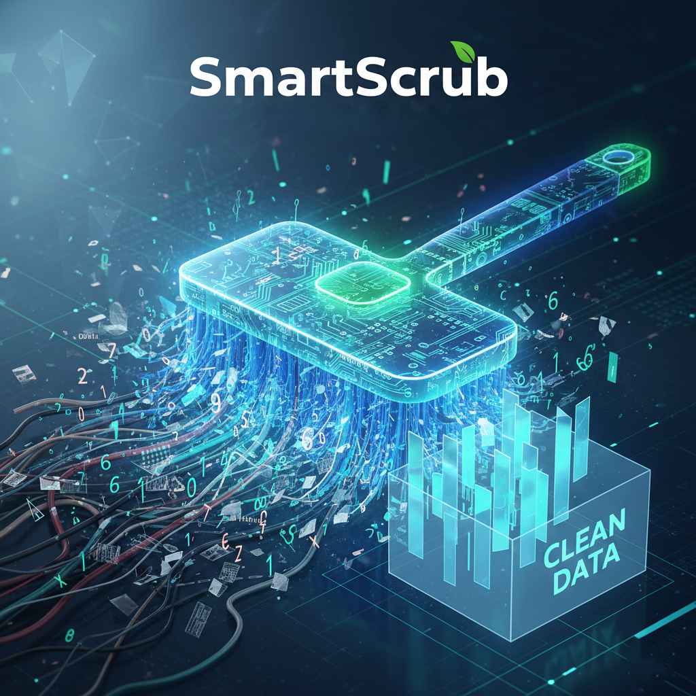

Sales Forecasting and Optimization
This project aims to forecast product demand and future sales for a major retail chain (Walmart) using multiple machine learning and deep learning techniques. With over 420,000+ records, we built robust models that assist in inventory planning, demand estimation, and data-driven decision-making.
ViewHeart Disease Predictor
A powerful machine learning project that analyzes patient medical data to predict heart disease risk. It identifies key patterns like age, chest pain type, blood pressure, cholesterol, and heart rate to detect high-risk individuals. This project provides early insights for patients and supports data-driven medical decision making.
View
Transform your data into actionable insights with our advanced cleaning and organization service, ensuring accuracy and clarity. Instantly process your data with precision while receiving detailed post-cleaning reports to track improvements. Gain full control with flexible smart tools and in-depth initial analysis, empowering confident, data-driven decisions.
ViewData Analysis
Performed an in-depth analysis of supermarket sales data to uncover key patterns and trends, helping to identify factors influencing revenue and customer behavior.
View
Titanic-EDA
Analysis of Titanic data revealed that survivor was strongly influenced by gender, passenger class, age, and family presence, highlighting the role of social and socioeconomic factors.
ViewML Classification
Developed a machine learning model to classify breast cancer as benign or malignant. The project included data preprocessing, feature selection, model training, and performance evaluation, supporting early detection and diagnostic accuracy.
View